생산자동화산업기사 (2017-05-07 기출문제)
1과목: 기계가공법 및 안전관리
1. 다이얼 게이지 기어의 백 래시(back lash)로 인해 발생하는 오차는?
- 인접 오차
- 지시 오차
- 진동 오차
- 되돌림 오차
(정답률: 76%)

2. 미끄러짐을 방지하기 위한 손잡이나 외관을 좋게 하기 위하여 사용되는 다음 그림과 같은 선반 가공법은?
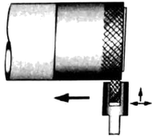
- 나사 가공
- 널링 가공
- 총형 가공
- 다듬질 가공
(정답률: 81%)
3. 선반에서 할 수 없는 작업은?
- 나사 가공
- 널링 가공
- 테이퍼 가공
- 스플라인 홈 가공
(정답률: 61%)
4. 밀링 머신에서 절삭공구를 고정하는데 사용되는 부속장치가 아닌 것은?
- 아버(arbor)
- 콜릿(collet)
- 새들 (saddle)
- 어댑터(adapter)
(정답률: 63%)
5. 수시가공 할 때 작업안전 수칙으로 옳은 것은?
- 바이스를 사용할 때는 조에 기름을 충분히 묻히고 사용한다.
- 드릴가공을 할 때에는 장갑을 착용하여 단단하고 위험한 칩으로부터 손을 보호한다.
- 금긋기 작업을 하는 이유는 주로 절단을 할 때에 절삭성이 좋아지기 위함이다.
- 탭 작업 시에는 칩이 원활하게 배출이 될 수 있도록 후퇴와 전진을 번갈아 가면서 점진적으로 수행한다.
(정답률: 67%)
6. 심압대의 편위량을 구하는 식으로 옳은 것은? (단, X : 심압대 편위량이다.)
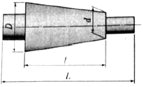
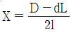
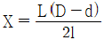
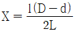
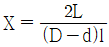
(정답률: 68%)
7. 공기 마이크로미터에 대한 설명으로 틀린 것은?
- 압축 공기원이 필요하다.
- 비교 측정기로 1개의 마스터로 측정이 가능하다.
- 타원, 테이퍼, 편심 등의 측정을 간단히 할 수 있다.
- 확대 기구에 기계적 요소가 없기 때문에 장시간 고정도를 유지할 수 있다.
(정답률: 56%)
8. 입자를 이용한 가공법이 아닌 것은?
- 래핑
- 브로칭
- 배럴가공
- 액체 호닝
(정답률: 65%)
9. 밀링 머신에서 테이블의 이송속도(f)를 구하는 식으로 옳은 것은? (단, fz:1개의 날 당 이송[mm], z : 커터의 날 수, n:커터의 회전수[rpm]이다.)
- f-fz×z×n
- f=fz×π×z×n
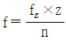
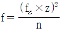
(정답률: 68%)
10. 비교 측정하는 방식의 측정기는?
- 측장기
- 마이크로미터
- 다이얼 게이지
- 버이너 캘리퍼스
(정답률: 69%)
11. 다음 그림과 같이 피측정물의 구면을 측정할 때 다이얼 게이지의 눈금이 0.5mm 움직이면 구면의 반지름[mm]은 얼마인가? (단, 다이얼 게이지 측정자로부터 구면계의 다리까지의 거리는 20mm이다.)
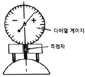
- 100.25
- 200.25
- 300.25
- 400.25
(정답률: 52%)
12. 일반적으로 센터드릴에서 사용되는 각도가 아닌 것은?
- 45°
- 60°
- 75°
- 90°
(정답률: 66%)
13. 연삭작업에 대한 설명으로 적절하지 않은 것은?
- 거친 연삭을 할 때에는 연삭 깊이를 얕게 주도록 한다.
- 연질 가공물을 연삭할 때는 결합도가 높은 숫돌이 적합하다.
- 다듬질 연삭을 할 때는 고운 입도의 연삭숫돌을 사용한다.
- 강의 거친 연삭에서 공작물 1회전마다 숫돌바퀴 폭의 1/2~3/4으로 이송한다.
(정답률: 58%)
14. 센터리스 연삭에 대한 설명으로 틀린 것은?
- 가늘고 긴 가공물의 연삭에 적합하다.
- 긴 홈이 있는 가공물의 연삭에 적합하다.
- 다른 연삭기에 비하여 연삭여유가 작아도 된다.
- 센터가 필요치 않아 센터 구멍을 가공할 필요가 없다.
(정답률: 66%)
15. 트위스트 드릴은 절삭날의 각도가 중심에 가까울수록 절삭작용이 나쁘게 되기 때문에 이를 개선하기 위해 드릴의 웨브부분을 연삭하는 것은?
- 디닝(thinning)
- 트루잉(truing)
- 드레싱(dressing)
- 글레이징(glazing)
(정답률: 58%)
16. 풀리(pulley)의 보스(boss)에 키 홈을 가공하려 할 때 사용되는 공작기계는?
- 보링 머신
- 호빙 머신
- 드릴링 머신
- 브로칭 머신
(정답률: 66%)
17. 산화알루미늄(Al2O3)분말을 주성분으로 마그네슘(Mg), 규소(Si)등의 산화물과 소량의 다른 원소를 첨가하여 소결한 절삭공구의 재료는?
- CBN
- 서멧
- 세라믹
- 다이아몬드
(정답률: 62%)
18. 박스 지그(box Jig)의 사용처로 옳은 것은?
- 드릴로 대량 생산을 할 때
- 선반으로 크랭크 절삭을 할 때
- 연삭기로 테이퍼 작업을 할 때
- 밀링으로 평면 절삭작업을 할 때
(정답률: 68%)
19. 래핑작업에 사용하는 랩제의 종류가 아닌 것은?
- 흑연
- 산화크롬
- 탄화규소
- 산화알루미나
(정답률: 62%)
20. 범용 밀링 머신으로 할 수 없는 가공은?
- T홈 가공
- 평면 가공
- 수나사 가공
- 더브테일 가공
(정답률: 54%)
2과목: 기계제도 및 기초공학
21. 기하학적 형상공차를 사용하는 이유로 거리가 먼 것은?
- 최대 생산 공차를 주어 생산성을 높인다.
- 끼워맞춤 부품의 호환성을 보증한다.
- 직각좌표의 치수방법을 변환시켜 간편하게 표시한다.
- 끼워맞춤, 조립 등 그 형상이 요구하는 기능을 보증한다.
(정답률: 68%)
22. 그림과 같은 도면에서 테이퍼가 1/2일 때 a의 지름은 몇 mm인가?
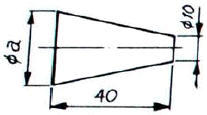
- 20
- 25
- 30
- 35
(정답률: 55%)
23. 그림과 같은 용접 기호를 가장 잘 설명 한 것은?
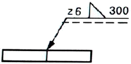
- 목길이 6mm, 용접길이 300mm인 화살표 쪽의 필릿 용접
- 목두께 6mm, 용접길이 300mm인 화살표 쪽의 필릿 용접
- 목길이 6mm, 용접길이 300mm인 화살표 반대 쪽의 필릿 용접
- 목두께 6mm, 용접길이 300mm인 화살표 반대 쪽의 필릿 용접
(정답률: 52%)
24. 축의 치수허용차 기호에서 위치수 허용차가 0인 공차역 기호는?
- b
- h
- g
- s
(정답률: 65%)
25. 그림과 같은 입체도를 제3각법으로 투상하였을 때, 가장 적합한 투상도는?
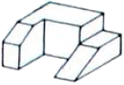
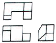
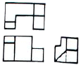
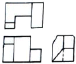
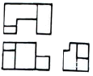
(정답률: 81%)
26. 그림과 같은 기어 간략도를 살펴볼 때 기어의 종류는?
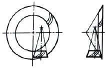
- 헬리컬 기어
- 스파이럴 베벨 기어
- 스크루 기어
- 하이포이드 기어
(정답률: 56%)
27. 가공 방법의 약호 중 FR이 뜻하는 것은?
- 브로칭 가공
- 호닝 가공
- 줄 다듬질
- 리밍 가공
(정답률: 72%)
28. 나사 표시 “M15×1.5-6H/6g"에서 6H/6g는?
- 나사의 호칭치수
- 나사부의 길이
- 나사의 등급
- 나사의 피치
(정답률: 68%)
29. 그림과 같이 하나의 그림으로 정육면체의 세 면 중의 한 면 만을 중점적으로 얼밀ㆍ정확하게 표현하는 것으로, 캐비닛도가 이에 해당하는 투상법은?
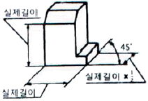
- 사투상법
- 등각투상법
- 정투상법
- 투시도법
(정답률: 59%)
30. 특수 가공하는 부분이나 특별한 요구사항을 적용하도록 범위를 지정하는데 사용되는 선의 종류는?
- 가는 1점 쇄선
- 가는 2점 쇄선
- 굵은 실선
- 굵은 1점 쇄선
(정답률: 58%)
31. 30μF콘덴서 3개를 병렬 연결하면 합성정전용량[μF]은?
- 3
- 9
- 10
- 90
(정답률: 67%)
32. 자동차가 12분 동안 6km를 달렸다면, 평균속력[km/h]은 얼마인가?
- 2
- 3
- 20
- 30
(정답률: 75%)
33. 스패너를 이용하여 수평면상의 볼트를 조일 때, 동일한 힘을 이용하여 토크를 2배 증가시키기 위한 방법으로 옳은 것은?
- 스패너의 길이를 1/2로 짧게한다.
- 스패너의 무게를 1/2로 가볍게 한다.
- 스패너의 길이를 2배로 길게 한다.
- 스패너의 무게를 2배로 무겁게 한다.
(정답률: 81%)
34. 9.8N에 관한 내용으로 틀린 것은?
- 9.8N=1kgf
- 9.8N=105dyn
- 9.8N=9.8kgㆍm/sec2
- 질량 1kg인 물체의 지구상 중량이다.
(정답률: 56%)
35. 다음 그림의 A점에 대한 모멘트[kgfㆍmm]는 얼마인가?
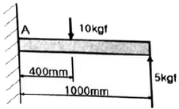
- 5
- 10
- 100
- 1000
(정답률: 64%)
36. 압력 1kgf/cm2는 몇 bar인가?
- 0.098
- 0.98
- 9.8
- 98
(정답률: 60%)
37. 가위로 물체를 자르거나 절단기로 철판을 절단할 경우에 주로 생기는 응력은?:
- 굽힘응력
- 수직응력
- 압축응력
- 전단응력
(정답률: 83%)
38. 모멘트의 중심에서 200cm 떨어진 지점에 접선 방향으로 20N의 힘이 작용할 때의 모멘트 [Nㆍm]는 얼마인가?
- 10
- 40
- 100
- 400
(정답률: 65%)
39. SI유도단위가 아닌 것은?(오류 신고가 접수된 문제입니다. 반드시 정답과 해설을 확인하시기 바랍니다.)
- 힘[N]
- 열량[J]
- 질량[kg]
- 압력[Pa]
(정답률: 56%)
40. 전자유도 현상에 의하여 생기는 유도기전력의 크기를 정의하는 법칙은?
- 옴의 법칙
- 쿨롱의 법칙
- 오른나사의 법칙
- 페러데이의 법칙
(정답률: 70%)
3과목: 자동제어
41. 어떤 대상물의 현재 상태를 원하는 상태로 조절하는 것을 무엇이라 하는가?
- 신호(signal)
- 밸브(valve)
- 제어(control)
- 명령(instruction)
(정답률: 82%)
42. 잔류편차가 감소하고 응답 속응성이 개선되며 오버슈트를 감소시키는 제어동작은?
- 적분제어 동작
- 비례미분 제어동작
- 비례적분 제어동작
- 비례적분미분 제어동작
(정답률: 50%)
43. PPI 8255에서 포트(port)를 통해서 외부장치로 데이터를 보낼 때만 사용하는 신호는?
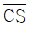
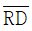
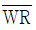
- RESET
(정답률: 59%)
44. 전압, 주파수를 제어량으로 하고 목표값을 장시간 일정하게 유지하도록 하는 제어는?
- 비율제어
- 서보기구
- 자동조정
- 추종제어
(정답률: 69%)
45. 다음 기계시스템과 전기시스템의 요소 중 상사관계가 잘못 연결되어진 것은?
- 기계시스템-힘, 전기시스템-전압
- 기계시스템-변위, 전기시스템-전압
- 기계시스템-질량, 전기시스템-인덕턴스
- 기계시스템-점성마찰계수, 전기시스템-저항
(정답률: 62%)
46. PLC의 입출력부에서 외부기기와 내부회로를 전기적으로 절연시킬 목적으로 사용되는 전자소자는?
- 다이오드
- 트라이액
- 트랜지스터
- 포토 커플러
(정답률: 55%)
47. 다음 회로에서 시정수(time constant)는?
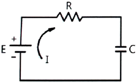
- RC
- C/R
- R/C
- 1/RC
(정답률: 65%)
48. 물체의 위치, 방위, 자세 등의 기계적 변위를 제어량으로 하는 제어방식은?
- 공정제어
- 서보제어
- 자동조정
- 정치제어
(정답률: 83%)
49. 감쇄비 h=0.4, 고유주파수 wn=1rad/s인 2차계의 전달함수는?
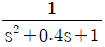
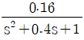
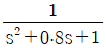
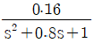
(정답률: 54%)
50. 다음 중 서보 모터의 관성을 줄이고 기계적 시정수를 줄이기 위한 조치로 적절하지 않은 것은?
- 회전자 반경을 크게 한다.
- 모터 회전자의 중량을 줄인다.
- 코어리스(coreless) 구조로 모터를 만든다.
- 모터 회전자의 지름을 작게하고 축 방향으로 길게하는 구조로 한다.
(정답률: 62%)
51. 전달함수의 성질에 대한 설명으로 틀린 것은?
- 전달함수는 제어계의 입력과는 무관하다.
- 전달함수는 비선형 제어계에서만 정의된다.
- 전달함수를 구할 때 제어계의 모든 초기조건을 0으로 한다.
- 전달함수는 임펄스 응답의 라플라스 변환으로 정의되며, 제어계의 입력 및 출역 함수의 라플라스 변환에 대한 비가 된다.
(정답률: 62%)
52. 다음 그림과 같은 회로에서 입력전류에 대한 출력전압의 전달함수는? (단, s는 라플라스연산자이다.)
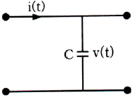
- Cs
- CV
- 1/Cs
- C/1+sT
(정답률: 60%)
53. 유압 회로에서 유압 실린더나 액추에이터로 공급하는 유체 흐름의 양을 제어하는 밸브는?
- 체크 밸브
- 압력 변환기
- 방향제어 밸브
- 유량제어 밸브
(정답률: 82%)
54. 다음 중 서보 모터에 사용되고 있는 회전 속도 검출기로 적합하지 않는 것은?
- 리졸버
- 엔코더
- 리밋 스위치
- 타코 제너레이터
(정답률: 73%)
55. 다음 프로그램은 C++언어를 사용하여 포트 B로 설정된 0x11 번지에 0xA4 값을 출력하는 프로그램이다. 이 프로그램에 대한 설명이 틀린 것은?
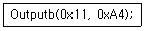
- B포트 1번 핀(pin)인 PB1은 High(1)값이 출력된다.
- B포트 2번 핀(pin)인 PB2는 High(1)값이 출력된다.
- B포트 5번 핀(pin)인 PB5은 High(1)값이 출력된다.
- B포트 7번 핀(pin)인 PB7은 High(1)값이 출력된다.
(정답률: 41%)
56. 배관 내에서 유체의 흐름은 층류와 난류로 구분한다. 다음 중 난류가 일어나는 조건은?
- 레이놀즈수가 1000이다.
- 배관 내의 유속이 비교적 작다.
- 배관 내의 유체의 동점도가 크다.
- 배관 내의 흘러가는 유체의 점도가 작다.
(정답률: 51%)
57. PLC에서 CPU의 자기진단 기능으로 발견될 수 없는 이상은?
- 메모리 이상
- 각종 링크 이상
- 입ㆍ출력 버스 이상
- 입ㆍ출력 접점 이상
(정답률: 58%)
58. 다음 중 불연속형 조절기는?
- 비례동작 조절기
- 2위치 동작 조절기
- 비례미분동작 조절기
- 비례적분동작 조절기
(정답률: 74%)
59. PLC의 주변기기를 사용하여 프로그램을 메모리에 기억시키는 것을 무엇이라고 하는가?
- 코딩(coding)
- 로딩(loading)
- 샌딩(sending)
- 디버깅(debugging)
(정답률: 62%)
60. 압축 공기를 생성할 때 필요한 구성요소와 관계없는 것은?
- 공압 필터
- 공압 탱크
- 공압 실린더
- 공기 압축기
(정답률: 68%)
4과목: 메카트로닉스
61. 센터리스 연삭기의 특징에 대한 설명으로 옳은 것은?
- 중공 공작물 연삭은 불가능하다.
- 가늘고 긴 공작물 연삭은 불가능하다.
- 긴 홈이 있는 공작물 연삭은 불가능하다.
- 반드시 센터 구멍을 가공하여 사용하여야 한다.
(정답률: 57%)
62. 마이크로컴퓨터 내부의 버스(bus)에 해당되지 않는 것은?
- 데이터 버스(data bus)
- 시프트 버스(shift bus)
- 컨트롤 버스(control bus)
- 어드레스 버스(address bus)
(정답률: 66%)
63. 스탭 각이 3.6°인 2상 HB형 스테핑모터를 반스탭 시퀀스(1-2상 여자)로 구동하면 1펄스당 회전각은?
- 0.9°
- 1.8°
- 3.6°
- 5.4°
(정답률: 85%)
64.
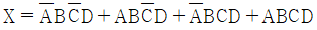
를 간단화 시킨 후, 논리회로를 그렸을 때 옳은 것은?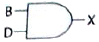
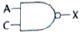
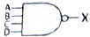
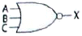
(정답률: 72%)
65. 소성가공에 포함되지 않는 것은?
- 단조
- 압연
- 인발
- 주조
(정답률: 63%)
66. AC 서보모터와 DC서보모터의 구조상 가장 큰 차이점은?
- 브러쉬 유무
- 영구자석 유무
- 고정자 코일 유무
- 전기자 코일 유무
(정답률: 78%)
67. 전압계로 교류 전압을 측정할 때 나타나는 값은?
- 순시값
- 실효값
- 최대값
- 평균값
(정답률: 74%)
68. 마이크로프로세서에서 인터럽트를 발생시킬 수 있는 이벤트(event) 요인이 아닌 것은?
- 정전발생
- 입ㆍ출력 작업완료
- 서브루틴 함수 호출
- 오버플로우(overflow)발생
(정답률: 50%)
69. 선반에서 척에 고정할 수 없는 불규칙하거나 대형의 가공물 또는 복잡한 가공물을 고정할 때 사용되는 것은?
- 면판
- 센터
- 돌림판
- 방진구
(정답률: 73%)
70. 마이크로프로세서의 레지스터(register)를 기능적으로 분류한 것이 아닌 것은?
- 메모리
- 명령 포인터
- 플래그 래지스터
- 세그먼트 래지스터
(정답률: 46%)
71. 트랜지스터에서 각 단자에 흐르는 전류가 베이스 50mA, 컬렉터 500mA가 흐른다면 이미터전류 IE는?
- 100 mA
- 450 mA
- 550 mA
- 25000 mA
(정답률: 70%)
72. 논리 등가 회로의 관계가 틀린 것은?
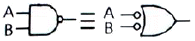
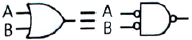
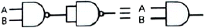
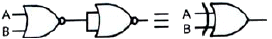
(정답률: 54%)
73. 서미스터에 대한 설명 중 옳은 것은?
- NTC 서미스터는 정(+)온도계수는 갖는다.
- 체적변화에 의해서 소자의 전기저항이 크게 변하는 반도체 소자이다.
- CTR 서미스터는 온도가 상승함에 따라 저항값이 증가하는 반도체 소자이다.
- PTC 서미스터는 온도가 상승함에 따라 저항이 현저히 증가하는 반도체 소자이다.
(정답률: 51%)
74. 전계 효과 트래지스터(FET)의 특징 중 틀린 것은?
- 입ㆍ출력 임피던스가 높다.
- 다수 캐리어만으로 동작한다.
- 동특성이 열적으로 불안정하다.
- 트랜지스터보다 잡음면에서 유리하다.
(정답률: 56%)
75. 아사에서 수나사와 암나사가 접촉하고 있는 부분의 평균지름을 뜻하는 것은?
- 리드
- 피치
- 유효 지름
- 호칭 지름
(정답률: 72%)
76. 쿨롱의 법칙에 관한 설명으로 틀린 것은?
- 힘의 크기는 두 전하량의 곱에 비례한다.
- 힘의 크기는 두 전하 사이의 거리에 반비례한다.
- 작용하는 힘의 방향은 두 전하를 연결하는 직선과 일치한다.
- 작용하는 힘의 크기는 두 전하가 존재하는 매질에 따라 다르다.
(정답률: 55%)
77. 다음 불(Bool) 대수의 연산 중 틀린 것은?
- A+1=A
- A+A=A
- AㆍA=A
- A+AㆍB=A
(정답률: 65%)
78. 25Ω의 저항에 주파수 60Hz인 전압
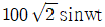
[V]를 가했을 때 전류의 실효 값[A]은?- 3
- 4
- 4√2
- 5
(정답률: 51%)
79. 콘덴서의 기능을 응용한 회로가 아닌 것은?
- 스파크 소거 회로
- 저역 통과필터 회로
- 교류 전류에 대한 저항 회로
- 교류 전원에 대한 정류 회로
(정답률: 51%)
80. 서보시스템에서 어떤 신호의 출력값이 처음으로 목표 값에 도달하는데 걸리는 시간이 0.3초라면 지연시간은?
- 0.1초
- 0.15초
- 0.2초
- 0.25초
(정답률: 79%)